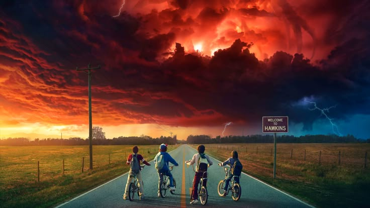

Stranger Things es una serie de ciencia ficción y misterio creada por los hermanos Matt Duffer y Ross Duffer.
Se estrenó en 2016 en la plataforma Netflix y rápidamente se convirtió en un fenómeno mundial.
La historia se desarrolla en el pequeño pueblo de Hawkins, donde comienzan a suceder eventos extraños relacionados con experimentos secretos,
desapariciones y una dimensión paralela conocida como el “Upside Down”.
A lo largo de la serie, un grupo de amigos se enfrenta a situaciones sobrenaturales mientras intenta descubrir la verdad.
Uno de los aspectos más destacados de la serie es su ambientación en los años 80, con referencias a la música, el cine y la cultura de esa época.
Además, combina elementos de terror, ciencia ficción y amistad, lo que la hace atractiva para distintos públicos.
